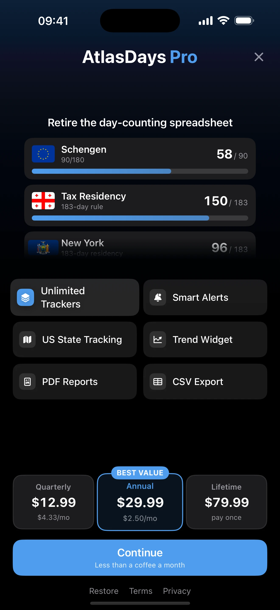

AtlasDays Pro: What's Free and What's Pro
Last updated: July 10, 2026
AtlasDays works fully for free, with no account required. Pro is an optional upgrade that unlocks power-user features. Here is exactly where the line is.
The short version: logging trips, importing them, counting countries, the dashboard, the map, one tracker, the World Map widget, and the small Tracker Status widget are all free. Pro adds unlimited trackers, Smart Alerts, CSV and PDF export, US state tracking, medium and large Tracker Trend widgets, and personalization. One Pro plan unlocks everything — there are no separate per-feature purchases.

What's Free
The free version is meant to be genuinely useful on its own, not a trial:
- Unlimited trips, added manually or imported. Photo Import, CSV Import, and Flighty Import are all free — getting your travel into AtlasDays never costs anything.
- The dashboard, timeline, and world map, including visited-country counts.
- All counting modes, including UN 195, UN 195+2, and the full All Places mode with territories and dependencies.
- One tracker — for example a Schengen 90/180 tracker, or a residency tracker.
- Free Home Screen widgets — the World Map widget in every size and the small Tracker Status widget.
- iCloud sync, the local-first privacy model, and optional Auto-Detect Trips.
- Every accent color except the Pro one.
What AtlasDays Pro Adds
- Unlimited trackers. Track Schengen, a residency threshold, a visa limit, and a personal goal at the same time, instead of just one.
- Smart Alerts. Get notified before you reach a limit, at thresholds you choose, rather than finding out after the fact.
- CSV Export. Back up or move your trip data as a spreadsheet. (Import stays free; exporting is the Pro side.)
- PDF Reports. Generate a clean travel report of your trips, days, and countries for records, visa applications, or compliance.
- US State Tracking. See the United States state by state and track days for individual states, not just the country as a whole. State tags can be added manually or preserved from state-aware Photo, CSV, and Flighty imports.
- Tracker Trend widgets. Use the medium and large tracker layouts for charts, forecasts, and upcoming-trip context. The World Map widget and small Tracker Status widget remain free. See Home Screen Widgets.
- Personalization. The alternate Pro app icon and a Pro accent color.
Free vs Pro at a Glance
| Feature | Free | Pro |
|---|---|---|
| Log trips (manual, Photo, CSV, Flighty import) | ✓ | ✓ |
| Dashboard, timeline, and world map | ✓ | ✓ |
| Counting modes (UN 195, UN 195+2, All Places) | ✓ | ✓ |
| iCloud sync & local-first privacy | ✓ | ✓ |
| Trackers | 1 | Unlimited |
| Smart Alerts | — | ✓ |
| CSV export & PDF reports | — | ✓ |
| US state tracking | — | ✓ |
| World Map & small Tracker Status widgets | ✓ | ✓ |
| Medium & large Tracker Trend widgets | — | ✓ |
| Personalization (Pro icon & accent) | — | ✓ |
How the Upgrade Works
There are three ways to go Pro, and each one unlocks every Pro feature:
- Quarterly subscription — billed every three months, cancellable anytime.
- Annual subscription — billed yearly, cancellable anytime.
- Lifetime — a one-time purchase with no recurring charge.
Current prices are shown in the app and vary by region, so they are not listed here. All three plans support Family Sharing, so a purchase can be shared with your family group. If you reinstall or move to a new iPhone, use Restore Purchases on the Pro screen while signed in to the same Apple Account.
Your trips are always yours. Pro unlocks features; it does not hold your data. If you stay on the free version — or a subscription lapses — your trips and history remain in the app, and only the Pro-only features lock again.
How to Upgrade
- Open AtlasDays and tap any Pro feature, or open Settings.
- On the AtlasDays Pro screen, choose quarterly, annual, or lifetime.
- Confirm the purchase with your Apple Account.
Already subscribed and want to stop renewing? You can switch to the lifetime option from the same Pro screen, and manage or cancel a subscription anytime in your Apple Account settings.
Common Questions
Is AtlasDays free?
Yes. Trip logging, all import methods, the dashboard, map, country counting, and one tracker are free with no account required. Pro is an optional upgrade.
Is Pro a subscription or a one-time purchase?
It can be either. You can subscribe quarterly or annually, or buy a one-time lifetime unlock. All three give you the same Pro features.
What happens to my trips if I don't buy Pro, or my subscription ends?
Nothing happens to your trips. Your record stays in the app. Only Pro-only features such as extra trackers, export, Tracker Trend widgets, and US state tracking become unavailable until Pro is active again. The World Map and small Tracker Status widgets remain available.
Are imports free if they contain US states?
Yes. Photo, CSV, and Flighty import are free. On the free plan, state-detected United States history saves as country-level United States trips. Pro preserves state-tagged rows so they can feed US State trackers and the state map.
Can my family share Pro?
Yes. The quarterly, annual, and lifetime options support Family Sharing.
How do I get Pro back on a new iPhone?
Sign in with the same Apple Account you used to purchase, then tap Restore Purchases on the AtlasDays Pro screen.
Try AtlasDays free, upgrade if you need more
The core is free, with no account. Add Pro when you need multiple trackers, alerts, exports, or US state tracking.
Get AtlasDays on the App Store